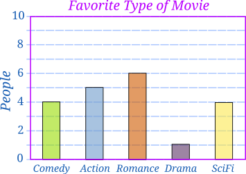
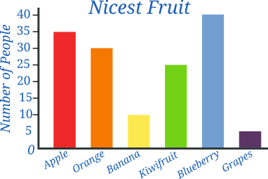
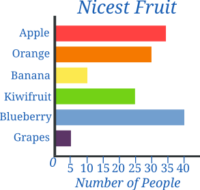
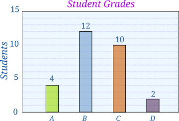
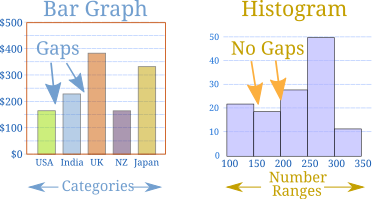

Bar Graphs
A Bar Graph (also called Bar Chart) is a graphical display of data using bars of different heights.
Imagine you do a survey of your friends to find which type of movie they like best:
| Table: Favorite Type of Movie | ||||
| Comedy | Action | Romance | Drama | SciFi |
|---|---|---|---|---|
| 4 | 5 | 6 | 1 | 4 |
We can show that on a bar graph like this:

It is a really good way to show relative sizes: we can see which types of movie are most liked, and which are least liked, at a glance.
A bar graph needs:
- A Title to tell us what the graph is about
- Labels on the axes so we know what we are looking at
- The values to start at zero. If they start at a higher number, it can make small differences look much bigger than they really are
We can use bar graphs to show the relative sizes of many things, such as what type of car people have, how many customers a shop has on different days and so on.
Example: Nicest Fruit
A survey of 145 people asked "Which is the nicest fruit?":
| Fruit: | Apple | Orange | Banana | Kiwifruit | Blueberry | Grapes |
| People: | 35 | 30 | 10 | 25 | 40 | 5 |
And here is the bar graph:

That group of people think Blueberries are the nicest.
Bar Graphs can also be Horizontal, like this:

Example: Student Grades
In a recent test, this many students got these grades:
| Grade: | A | B | C | D |
| Students: | 4 | 12 | 10 | 2 |
And here is the bar graph:

You can create graphs like that using our Data Graphs (Bar, Line, Dot, Pie, Histogram) page.
Bar Graph vs Histogram

A bar graph is best when our data is in categories (such as Comedy, Drama, and so on).
When we have continuous data (such as a person's height) we use a histogram.
- In a bar graph each bar is a category (like countries or favorite movies). The bars can usually be in any order, and there are gaps between them.
- In a histogram each bar is a number range (like 150-200 cm). The order matters, and the bars usually touch because the number line is continuous